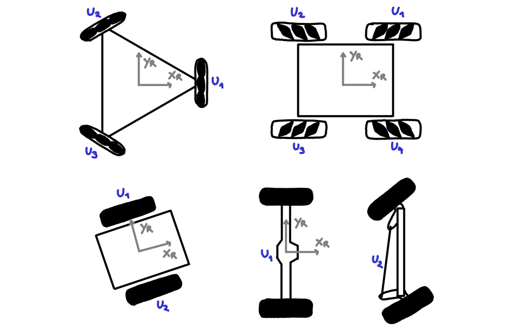
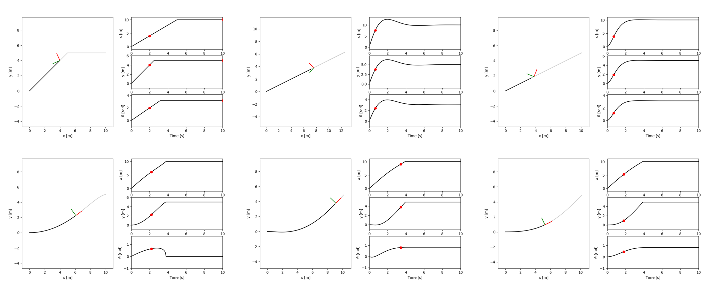
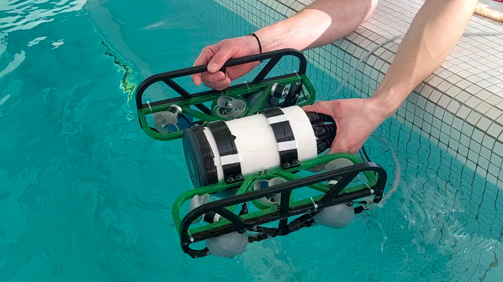

In a lucky coincidence and on short notice I managed to get a position as Lecturer at the University of Applied Sciences of the Grison (FHGR) in my hometown of Chur, Switzerland. This happened right after i saw myself forced to resign from my PhD position at the University of Groningen, Netherlands.
The very first course i ever gave was an elective course on "Land- and Water-based Robotics" for a bachelor's degree in "Mobile Robotics". It was a verry challenging one, as it was the very first time it would be held and there was no preexisting material to draw from. Thanks to the advice and trust of my colleagues and thanks to a pretty great group of students, everything went pretty smoothly!
The course was structured in two parts. One half were lectures on land-based robotics, while the other half were group projects on water-based robotics. In land-based robotics we looked at ways of modelling various wheeled robots, spanning robots with arbitrary omni-wheel configurations, mecanum wheels, differential-drive steering, and Ackerman steering. Once we had the models, we implemented various controllers to steer the robots to their destination (regrettably only in a python simulation environment). These controllers included simple bang-bang control, PID with a few variations, linear regulators, and L1/L0 controllers. After talking for a few weeks about wheeled robots, i tried my hand at introducing the basics of legged robots, the other big category of land-based robots. This part went a bit less smoothly, as it was far more difficult to explain the topic clearly and concisely.
 The second part of the course was on water-based robotics, with which I admitteldly had little experience with. So, with a lot of autonomy, the class got to built three small water robots! The only important conditions were to build three distinct robots, and to share the learnings with the other groups in a final presentation. This resulted in the "Ravioli" fully-actuated submarine, the "SonarBoat" capable of scanning the ground of deep lakes, and the "ABEM" implementing a prototype solar sailing ship with a vast array of sensors onboard.
In progress ;)